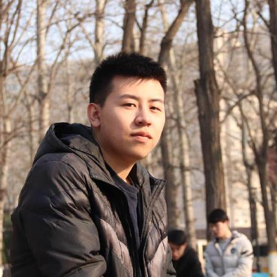

Machine learning & reasoning
Linghui Meng 孟令辉
Institute of Automation, Chinese Academy of Sciences (CASIA)
PhD, 2024

Learning & coordination01 / PROFILEAbout me
I earned my PhD at the Institute of Automation, Chinese Academy of Sciences (CASIA) in 2024, working on multi-agent reinforcement learning. I graduated from Beijing Jiaotong University in July 2019.
My recent publications explore parallel reasoning and large language models. My research interests also include probabilistic graphical models, generative models, contrastive learning, and multi-agent reinforcement learning. My work has explored MARL applications in video games and route packaging. I also serve as a reviewer for the International Conference on Machine Learning (ICML) and Neural Information Processing Systems (NeurIPS).
- LLM & parallel reasoning
- Multi-agent RL
- Generative models
- Contrastive learning
- Probabilistic graphical models
02 / EXPERIENCEExperience
–
ERNIE Thinking
Led the integration of reinforcement learning (RL) updates into the ERNIE Thinking model.
03 / UPDATESNews
Invited talk on How to pre-train a really large model with many GPUs? at the experimental class of direct doctoral students in CASIA.
I have been chosen as a member of the first experimental class of direct doctoral students in CASIA.
04 / RESEARCHPublications
14 publications
-
A Survey on Parallel Reasoning
National Science Review · Accepted manuscript · 2026
-
ERNIE 5.0 Technical Report
Technical report · 2026
-
A2R: An Asymmetric Two-Stage Reasoning Framework for Parallel Reasoning
arXiv preprint · 2025
-
A New Pre-Training Paradigm for Offline Multi-Agent Reinforcement Learning with Suboptimal Data
ICASSP 2024
-
UNeC: Unsupervised Exploring In Controllable Space
ICASSP 2024
-
ViLaS: Exploring the Effects of Vision and Language Context in Automatic Speech Recognition
ICASSP 2024
-
Long Short-Term Reasoning Network with Theory of Mind for Efficient Multi-Agent Cooperation
IJCNN 2024
-
SA-MPF: A Status-Aware Mask Prediction Framework for Online Disease Diagnosis
IJCNN 2024
-
One paper about offline multi-agent reinforcement learning accepted
To appear at AAMAS 2023
-
Learning Multi-Agent Action Coordination via Electing First-Move Agent
ICAPS 2022
-
GCS: Graph-based Coordination Strategy for Multi-Agent Reinforcement Learning
AAMAS 2022
-
Offline Pre-trained Multi-Agent Decision Transformer: One Big Sequence Model Tackles All SMAC Tasks
arXiv preprint · 2021
-
Settling the Variance of Multi-Agent Policy Gradients
NeurIPS 2021
-
MixSpeech: Data Augmentation for Low-resource Automatic Speech Recognition
ICASSP 2021
05 / NOTES & TALKSOther writings
Slides and learning materials.
06 / ELSEWHEREUseful links
07 / GET IN TOUCHContact
95 Zhongguancun East Road
100190, Beijing, China